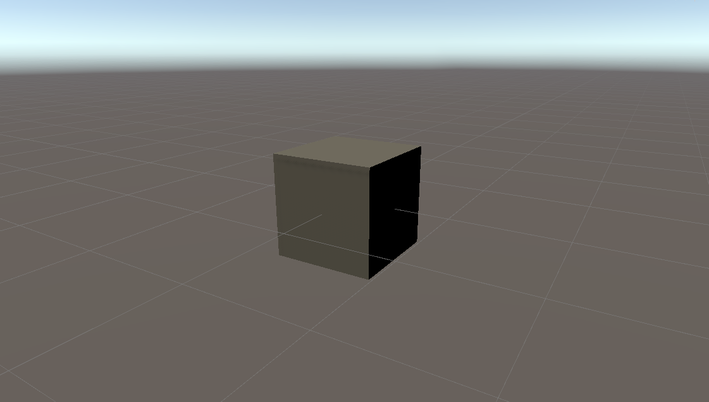
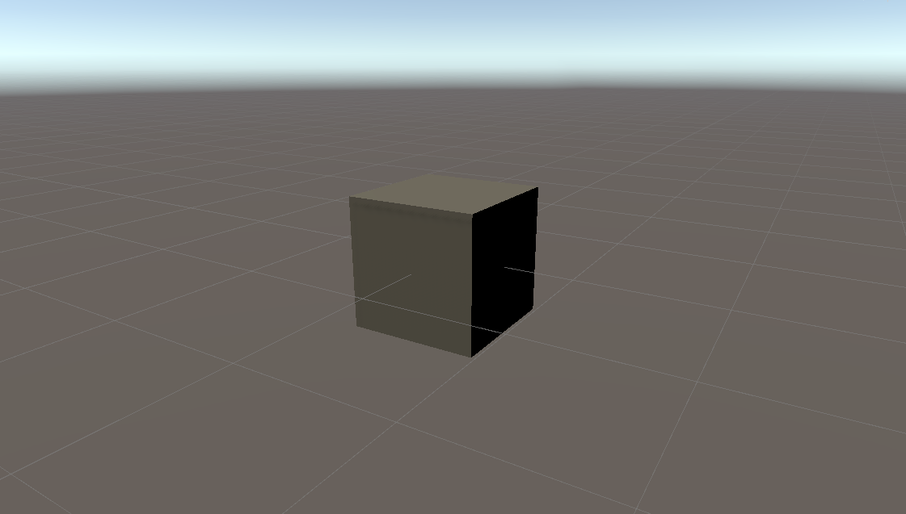

Unity Primitive : Cube
In the Unity 3D game engine the default cube is grey and 1x1x1 unit. In VR and AR applications, the Unity unit translates to a meter in IRL space. For today's game engines rendering a cube is trivial, it can happen in a fraction of a second. Crocheting the same cube with yarn took me a year and a half. The inside is empty. Just like the digital 3D model it is a closed surface of faces. It takes 2 people to hold it up and see the 3 dimensional cube shape, and even then it sags.
2019-2020, hand-crocheted acrylic yarn